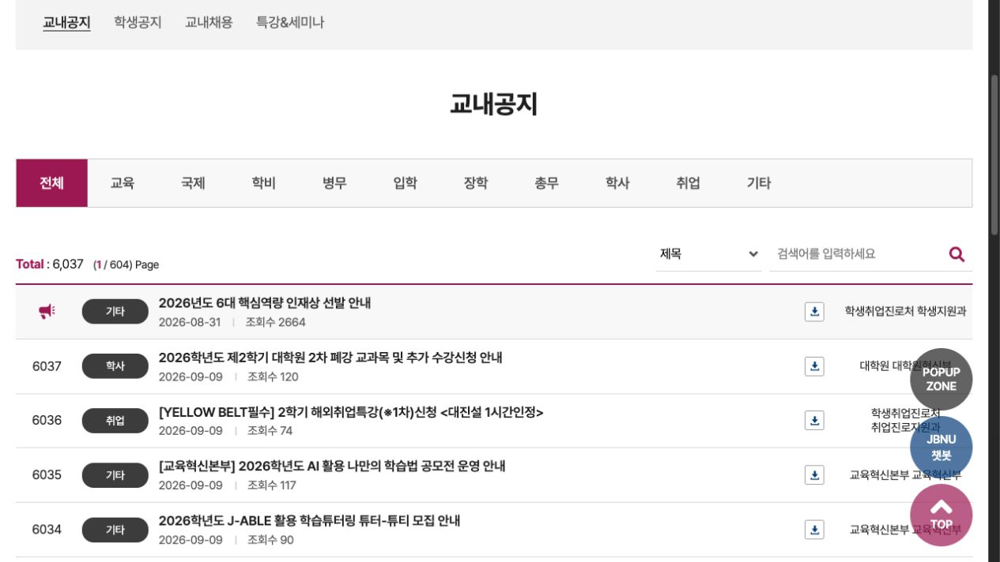
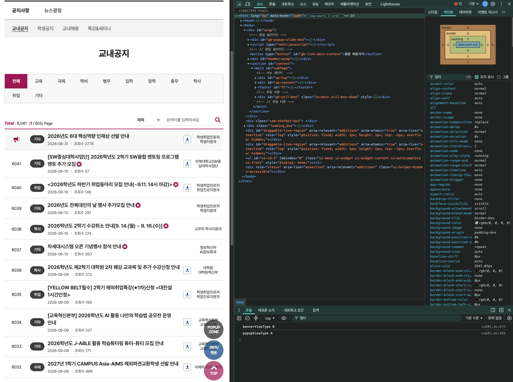
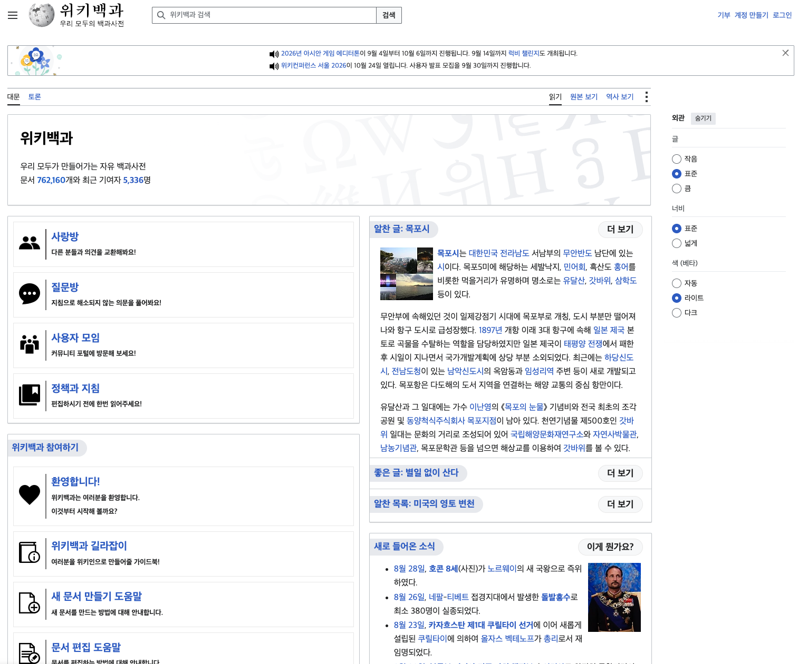
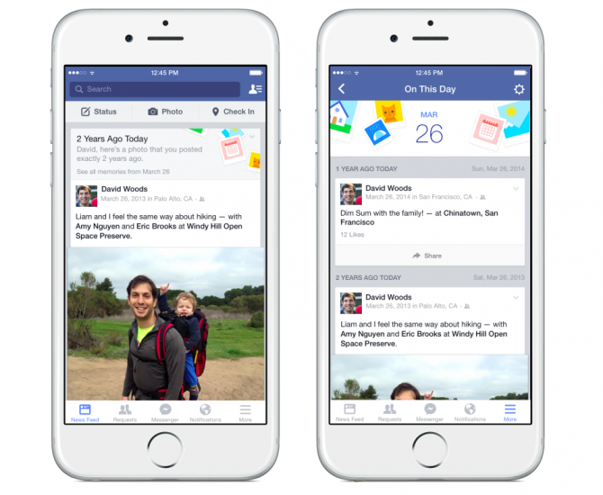

0. 웹 개발 흐름
초급프로젝트 TA SESSION · 2026학년도 2학기
0. 실습 환경 설정
수업 시작 전, 아래 순서대로 실습 환경을 준비해 주세요.
- VS Code 설치: 다운로드에서 운영체제에 맞는 버전을 설치합니다.
- Live Server 설치: VS Code의 확장 메뉴에서
Live Server(Ritwick Dey)를 검색해 설치합니다. 설치·실행 안내 - 폴더와 파일 만들기: VS Code 상단 메뉴에서 파일 → 폴더 열기를 누릅니다.
열린 창에서 원하는 위치(예: 바탕화면)로 이동해 새 폴더(예:html-practice)를 만듭니다. 만든 폴더를 선택하고 폴더 선택 또는 열기를 누릅니다.
VS Code 왼쪽 탐색기에 폴더가 나타나면 새 파일 버튼을 눌러test.html을 입력하고 Enter를 누릅니다. - HTML 기본 구조 만들기:
test.html에서!입력 → Emmet 자동완성 항목 선택 후 Enter.<html>,<head>,<body>가 자동 생성됩니다. - 실행 확인:
<body>안에안녕하세요입력 → 저장(Windows:Ctrl+S/ Mac:Cmd+S) →test.html우클릭 → Open with Live Server.
설정 완료: 브라우저에 ‘안녕하세요’가 보이고, 문구를 바꿔 저장하면 자동으로 새로고침됩니다.
1. 클라이언트와 서버

질문) 클라이언트와 서버는 무엇을 주고받을까?
2. URL로 요청하고, HTML을 받는다

HTML (HyperText Markup Language): 내용과 구조를 표시한 텍스트 문서
HTML 예시새 창에서 보기 ↗
HTML 전체 문서
<!DOCTYPE html>
<html lang="ko">
<head>
<meta charset="UTF-8">
<meta name="viewport" content="width=device-width, initial-scale=1">
<title>교내공지 — HTML 예시</title>
</head>
<body>
<h1>교내공지</h1>
<p>학생 여러분에게 안내드립니다.</p>
<ul>
<li>수강신청 안내</li>
<li>장학금 신청 안내</li>
</ul>
<a href="https://www.jbnu.ac.kr/web/news/notice/sub01.do"
target="_blank" rel="noopener noreferrer">
전북대학교 공지사항 보기
</a>
</body>
</html>미리보기
질문) 내용만 보여주면 될까?
3. HTML · CSS · JavaScript

| HTML | 내용 · 구조 |
| CSS | 표현 · 배치 |
| JavaScript | 입력 · 데이터 처리 · 화면 갱신 |
CSS 추가새 창에서 보기 ↗
HTML + CSS 전체 문서
<!DOCTYPE html>
<html lang="ko">
<head>
<meta charset="UTF-8">
<meta name="viewport" content="width=device-width, initial-scale=1">
<title>교내공지 — HTML + CSS 예시</title>
<style>
body {
font-family: sans-serif;
margin: 16px;
}
h1 {
font-size: 24px;
border-bottom: 2px solid #333;
}
li {
margin: 8px 0;
padding: 8px;
background: #f2f2f2;
}
a { color: #333; }
</style>
</head>
<body>
<h1>교내공지</h1>
<p>학생 여러분에게 안내드립니다.</p>
<ul>
<li>수강신청 안내</li>
<li>장학금 신청 안내</li>
</ul>
<a href="https://www.jbnu.ac.kr/web/news/notice/sub01.do"
target="_blank" rel="noopener noreferrer">
전북대학교 공지사항 보기
</a>
</body>
</html>HTML + CSS
JavaScript 추가새 창에서 보기 ↗
HTML + CSS + JavaScript 전체 문서
<!DOCTYPE html>
<html lang="ko">
<head>
<meta charset="UTF-8">
<meta name="viewport" content="width=device-width, initial-scale=1">
<title>교내공지 — HTML + CSS + JavaScript 예시</title>
<style>
body {
font-family: sans-serif;
margin: 16px;
}
h1 {
font-size: 24px;
border-bottom: 2px solid #333;
}
li {
margin: 8px 0;
padding: 8px;
background: #f2f2f2;
}
a { color: #333; }
</style>
</head>
<body>
<h1>교내공지</h1>
<p>학생 여러분에게 안내드립니다.</p>
<button id="toggle" type="button">공지 접기</button>
<ul>
<li>수강신청 안내</li>
<li>장학금 신청 안내</li>
</ul>
<a href="https://www.jbnu.ac.kr/web/news/notice/sub01.do"
target="_blank" rel="noopener noreferrer">
전북대학교 공지사항 보기
</a>
<script>
const button = document.querySelector("#toggle");
const list = document.querySelector("ul");
button.addEventListener("click", () => {
list.hidden = !list.hidden;
button.textContent = list.hidden ? "공지 펼치기" : "공지 접기";
});
</script>
</body>
</html>HTML + CSS + JavaScript
질문) 이 정도면 웹 개발 준비 완료?
4. React · Vue

좋아요 · 댓글 · 메시지 → 계속 바뀌는 화면
React · Vue: 컴포넌트 재사용 · 데이터에 따른 화면 갱신
질문) 좋아요 하나 누를 때마다 페이지 전체를 다시 받아야 할까?
5. 필요한 데이터만 주고받기
최초 접속: HTML · CSS · JS
받은 데이터 → JS로 화면 갱신
{
"id": 123,
"title": "오늘의 테니스 연습",
"author": "홍길동",
"likes": 42,
"commentCount": 8,
"isLiked": true
}6. 기본적인 웹서비스 전체 구조
Client브라우저
Frontend
- HTML
- CSS
- JavaScript
- React
- Vue
- Angular
Server요청 처리
Backend
- Spring (Java)
- Django (Python)
- FastAPI (Python)
- NestJS (Node.js)
- Express (Node.js)
DB데이터 저장
Database
- MySQL
- Oracle Database
- MongoDB